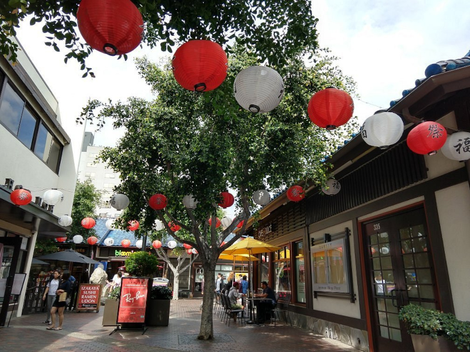
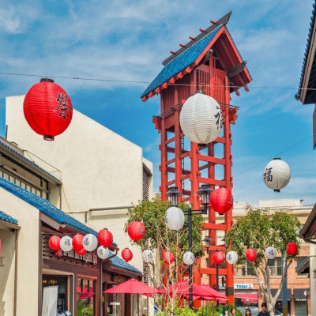
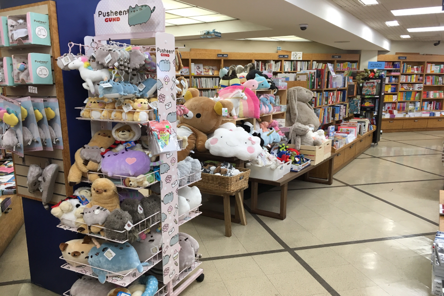
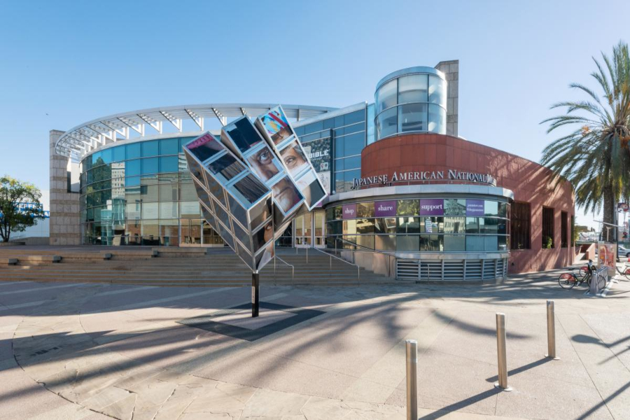
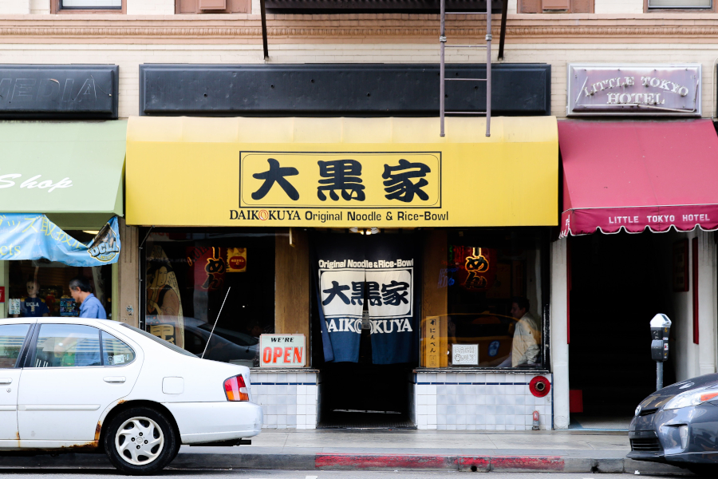

Little Tokyo is a location in Downtown Los Angeles where an assortment of shops,
restaurants, markets
and the setting itself is based off Japan.



Things to Do
At Little Tokyo, there is an abundance of things you can do!
Eat with your friends or dine out!
At Little Tokyo, there are multiple restaurants that give you a
variety of delicious foods and drinks to choose from!
Get some gifts for you or your friends
There are multiple shops that sell mulitple and unique items, such as
Manga
Anime Figures and/or items
Music
Clothing
and so much more!
Shop at Japanese Markets for delicious meals and
snacks!
At Maruki Market, located in Weller Court, you are sure to find
delicious and tasty snacks from Japan! You are also sure to find bentos and
whole meals that can be easily heated up with just a microwave. If you're hungry
and looking for a quick bite, or are looking for a meal to eat at home, this is
the place to do so!

Learn about the history here at the Japanese
American National Museum!
The Japanese American Museum allows you to take a glimpse, showcasing the
history of Japanese Americans over the years. Exhibits showcasing modern art and
historic artifacts collected over the years will take you to those periods and
experience the history of Japanese Americans, and the impact they had.
Click here
if you're interested in visiting the museum itself!
There are other things to see as well, such as the
Japanese Village Plaza
and it's amazing atmosphere, the interior of unique stores, shops, and restaurants
that are based with Japan's very own,
as well as the annual Nisei Week Festival!
(See below for more information)

Have a taste of genuine Japanese cuisine!
Hungry? Well Little Tokyo offers a wide range of restaurants and bakerys that
are sure to satisfy your hunger and bring joy to your tastebuds!
Come try the curry man from
Yamazaki
Bakery, or come to the well-known
and popular
Daikokuya
and try their famous Daikoku and Spicy Miso Ramen!
There are multiple places to go to! Below shows a few of them!
Every August from the 12th to the 20th comes the Nisei Week Festival! Come join as
you celebrate the history of Japanese American culture with
cultural food, entertainment, performances, car shows, and parades! Then show out on
the closing ceremony, where you will get to see Japanese tradition
of dancing in the streets, as well as many other historic performances!
Click here
to find out more about the festival and also register as a volunteer if you're
interested!